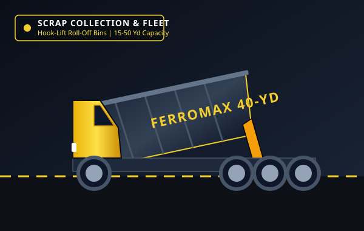

Fleet Logistics
Heavy-duty logistical collection engineered for manufacturing plants, stamping facilities, automotive assembly lines, and industrial demolition projects.
- Over 250 heavy-duty roll-off containers (15 to 50 cu. yds) with GPS tracking
- Dedicated fleet of knuckle-boom crane trucks with 1.5 cu. yd orange-peel grapples
- Direct rail spur connection for multi-car gondola bulk scrap intake
- Guaranteed 24-hour bin turnaround to eliminate plant floor clutter
Throughput Capacity: 1,200 MT / Day Daily Ingestion Fleet Velocity